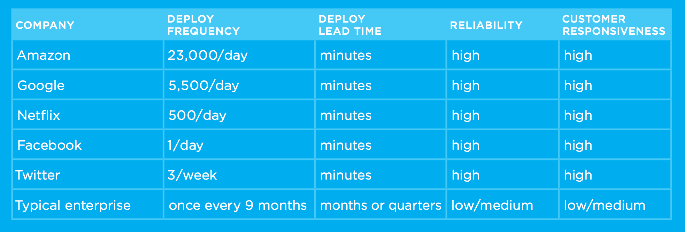

DevOps
-- An IT mindset --
If you’re not writing software to manage them (Ops), you’re not surviving.
Agenda
- Context
- Pre-Agile/ Pre-DevOps Days
- Little History
- Waterfall, CI, CD, DevOps Nirvana
- Culture, Tools, Stories, Everything Else
Software moves faster today/ Life of a code
- Startups can now take on giants with little to no funding ahead of time
- Getting your software into the hands of millions is a download away
- Your ability to move fast is paramount to your ability to fight off disruption
Software creation and distribution is easier and faster than ever
First, we need to understand a little bit about software release processes
Release processes have four major phases
- Source: Create, review & check in the code.
- Build: Compile code, Run unit tests, Style checkers, Gather Code metrics
- Test: Integration tests with other systems, Load testing, UI tests, Penetration testing
- Production: Deployment to production environments
Pre-Agile/ Pre - DevOps Days
“Fear is the path to the dark side. Fear leads to anger. Anger leads to hate. Hate leads to suffering.” – Yoda
Little History
- 2007 - Patrick Debois, a software development consultant, had a goal of learning all aspects of IT. Patrick had always been bothered by the differences between how Dev and Ops worked, but he became particularly frustrated with the challenges of managing work across the two groups on his projects.
- 2008 - Andrew Shafer posted an idea for an agile infrastructure “birds of a feather” session at the Agile 2008 Conference.
Little History Contd..
- 2009 - John Allspaw, senior vice president of technical operations at Flickr, and Paul Hammond, director of engineering at Flickr, gave a presentation at the O’Reilly Velocity Conference in San Jose, “10+ Deploys per Day: Dev and Ops Cooperation at Flickr.” The presentation laid the groundwork for how Dev and Ops can effectively work together to improve software deployment. #DevOpsDays
- 2010 - DevOpsDays were held in Australia and the U.S. Over time, there were more and more DevOpsDays that were hosted in different countries and cities around the world.
Little History Contd..
- 2011 - Up until 2011, the DevOps movement has been fueled by individuals and open source tools with little attention from analysts or vendors.
- 2012 - By 2012 DevOps was quickly turning into a buzzword and DevOpsDays continued to grow.
- 2014 - Large companies such as Target, Nordstrom and LEGO became some of the first companies to bring DevOps into the enterprise.
What is DevOps Not?
- It’s Not NoOps
- It’s Not (Just) Tools
- It’s Not (Just) Culture
- It’s Not (Just) Devs and Ops
- It’s Not (Just) A Job Title
- It’s Not Everything
Devops is not a plan, it’s a reaction.
What is DevOps?
- Culture
- Automation
- Lean
- Measurement
- Sharing
Paint the wall with awareness
DevOps Workflow

DevOps Nirvana [Maturity]
- Waterfall Development
- Continuous Integration
- Continuous Delivery
- Continuous Deployment
Waterfall Development
Before continuous integration, development teams would write a bunch of code for three to four months. Then those teams would merge their code in order to release it. The different versions of code would be so different and have so many changes that the actual integration step could take months. This process was very unproductive.
Continuous Integration
Continuous integration is the practice of quickly integrating newly developed code with the main body of code that is to be released. Continuous integration saves a lot of time when the team is ready to release the code. Continuous integration is an agile engineering practice originating from the Extreme Programming methodology.
Continuous integration is often the first step down the path toward DevOps maturity.
- Checking your code in to source control.
- Compiling it into usable (often binary executable) code.
- Running some basic validation testing.
Continuous Delivery
Continuous delivery is an extension of continuous integration [DevOps stage 2]. It sits on top of continuous integration.
It’s the practice of having the code base continuously in a ready-to-deploy state.
Continuous Deployment
Continuous deployment, not to be confused with continuous delivery [DevOps nirvana], is the most advanced evolution of continuous delivery. It’s the practice of deploying all the way into production without any human intervention.
DevOps Tooling
- Source Code Repository
- Build Server
- Configuration Management
- Virtual Infrastructure
- Test Automation
- Pipeline Orchestration
- Messaging / Collaboration
- Business Intelligence
- Security
Source Code Repository

Source control is a major component of continuous integration.
Build Server

The build server is an automation tool that compiles the code in the source code repository into executable code base.
Configuration Management

Configuration management defines the configuration of a server or an environment.
Virtual Infrastructure

Virtual infrastructures (Cloud / IaaS / PaaS) combined with automation tools to empower organizations practicing DevOps with the ability to configure a server without any fingers on the keyboard.
Test Automation

DevOps testing focuses on automated testing within your build pipeline to ensure that by the time that you have a deployable build, you are confident it is ready to be deployed.
Pipeline Orchestration

Configuration management defines the configuration of a server or an environment.
Messaging / Collaboration

Configuration management defines the configuration of a server or an environment.
Business Intelligence

Configuration management defines the configuration of a server or an environment.
Security

Configuration management defines the configuration of a server or an environment.
Stories
Netflix, Etsy, Amazon, Pinterest, Flicker, IMVU and Google are popular examples of companies doing continuous deployment.
A bookstore in Seattle, deploys code to production every 11 seconds… 2012
1 second
Netflix - Simian Army
- Chaos Monkey
- Chaos Gorilla
- Chaos Kon
- Latency Monkey
- Conformity Monkey
- Security Monkey
- Doctor Monkey
- Janitor Monkey
Amazon, Google, Netflix..
DevOps Reading List